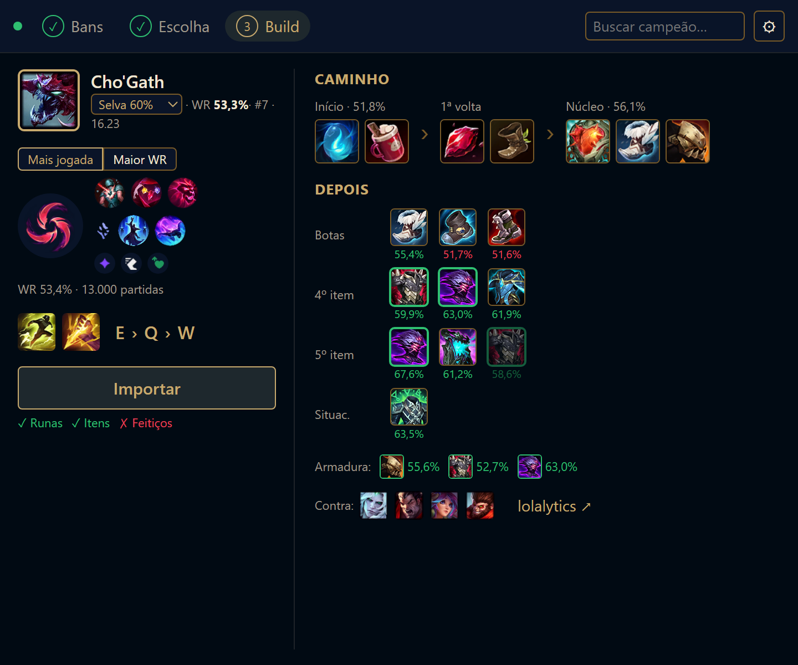
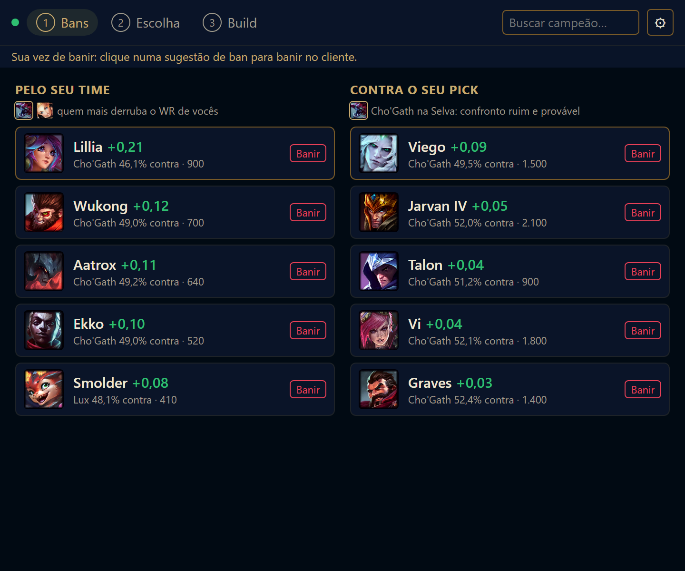
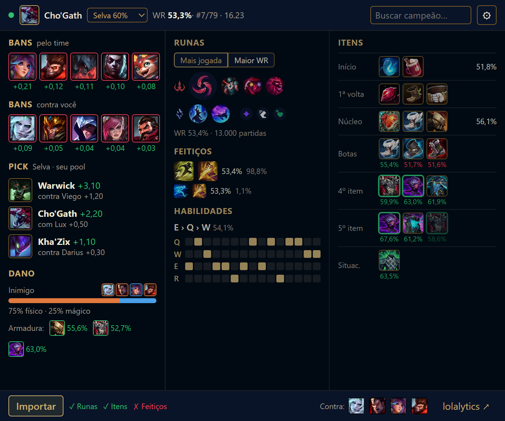
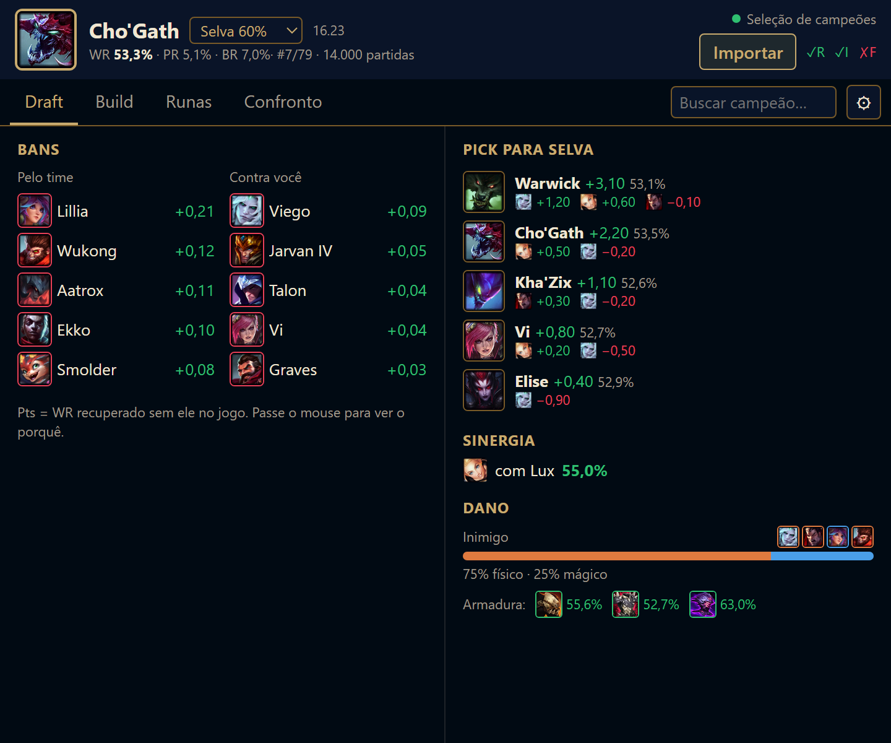
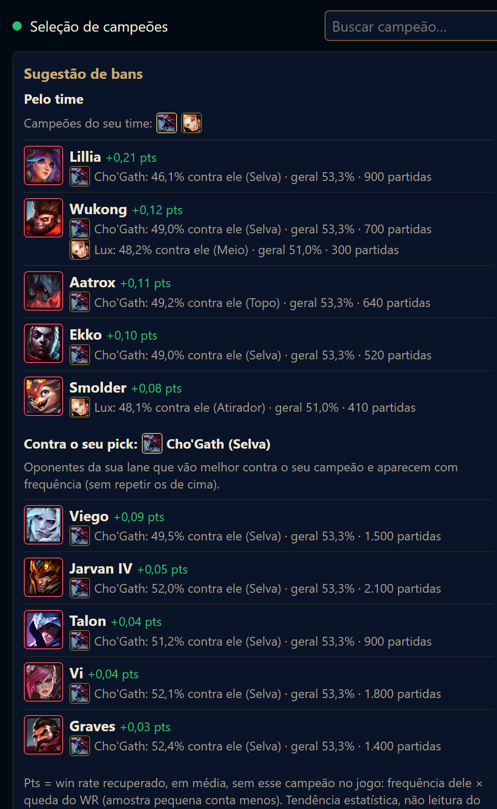

Runas, feitiços e um conjunto de itens com o win rate de cada item, direto do lolalytics, importados assim que você trava o campeão. Sugere bans e picks para o seu time. Leve, sem overlay e sem nada durante a partida.

Escolha o layout nas configurações. Os três primeiros cabem numa janela de 720×600, sem rolagem. As imagens usam dados de exemplo.

A janela mostra só o que importa agora e avança sozinha junto com o cliente.
Bans: duas listas de 5, pelo seu time e contra o seu pick; na sua vez, um clique bane.
Escolha: sugestões de pick com a nota de cada confronto e dupla, mais a composição de dano dos times.
Build: runas (a mais jogada, a de maior win rate ou a sua), feitiços, habilidades e o caminho de itens com o win rate de cada um.

Tudo sempre à vista em três colunas: draft (bans, picks e dano), runas com feitiços e habilidades, e itens. A coluna da etapa atual fica em destaque, e os números de apoio ficam no tooltip.

O campeão e o botão Importar ficam fixos no topo. Embaixo, uma aba por vez: Draft, Build, Runas (com o win rate das alternativas de cada fileira) e Confronto. A aba acompanha a etapa da seleção até você clicar em outra.

Uma coluna com tudo, com rolagem: bans com o motivo de cada um, picks, build completo, tendência de win rate, perfil de dano e configurações no fim.
Dados do lolalytics (ranqueada solo, Esmeralda+ global por padrão; elo, região e período configuráveis), com cache de 6 horas.
Página de runas, feitiços (com o Flash na tecla de sempre) e conjunto de itens na loja, com o win rate no título de cada bloco.
Quem mais derruba o win rate do seu time e, à parte, os oponentes da sua lane que vão bem contra o seu campeão e aparecem com frequência. Na sua vez de banir, clique na sugestão e o ban sai no cliente (novo na 0.6.0).
Do seu pool (maestria) ou da tier list, somando força na lane, counter contra cada inimigo visível e sinergia com cada aliado declarado.
Para quem é mono: monte no app (até sem o cliente aberto) ou copie do cliente a página do seu campeão e lane. Ela aparece como "Minha" ao lado da mais jogada e da de maior WR, com quantos pontos de WR cada runa diferente muda.
Escolha o campeão do outro lado e veja runas, feitiços e itens daquele confronto, com o win rate comparado ao geral.
Por item e posição na build, núcleo de 3 itens, primeira volta, situacionais, ordem de habilidades e alternativas de runa.
Quanto do time inimigo é físico ou mágico, e quais itens de armadura ou resistência mágica do seu build estão indo melhor.
Avisa quando sai versão nova e instala quando você clicar, conferindo a assinatura do pacote. Nunca sozinho, nunca na seleção.
A janela abre na seleção e é destruída quando a partida começa. Durante o jogo fica só um ícone na bandeja.
Usa só a API local do próprio cliente do League, sem ler memória do jogo e sem nada desenhado por cima da partida.
Instala só para o seu usuário, sem pedir administrador. Por cima de uma versão anterior, mantém as configurações.
O instalador ainda não tem certificado de assinatura do Windows. Confira o SHA-256 nas notas da versão, se quiser.
O ponto verde no topo da janela indica que o app achou o cliente. Na seleção, trave o campeão: runas, feitiços e itens entram sozinhos.
O app usa a API local do cliente para importar runas, itens e feitiços, como os apps conhecidos de build. Ele não age sozinho (o único ban é o que você clica, na sua vez), não revela nomes ocultos e não mostra nada durante a partida. Não é afiliado nem endossado pela Riot Games.
Porque o instalador ainda não tem certificado de assinatura de código do Windows, que é pago. O SmartScreen deixa executar em "Mais informações"; o Smart App Control, quando ligado, pode bloquear.
Sim, a partir da 0.6.0. Busque o campeão e clique em "Montar minha página" no cartão de runas: o editor funciona na própria janela, até sem o cliente do League aberto (a partir da 0.6.1; o app guarda os dados das runas da última vez que achou o cliente). Também dá para montar no cliente, até na seleção de campeões, e usar "Copiar do cliente". Ela fica guardada para aquele campeão e lane e passa a ser importada no lugar da do lolalytics; dá para voltar à mais jogada, trocar ou apagar quando quiser. Montar ou copiar a página só grava no seu computador; nada muda no cliente até a importação.
Do lolalytics.com, com cache de 6 horas e no máximo uma consulta por segundo. São tendência estatística das partidas do elo escolhido, não leitura do outro time. O app sempre mostra o link para a página original.
Por enquanto só Windows 10 e 11.